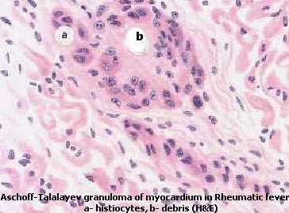
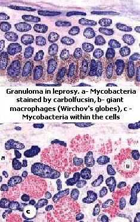
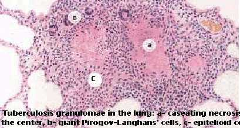
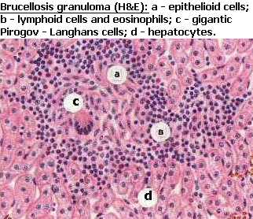

GRANULOMATOUS HYPERSENSITIVITY
If an allergen penetrates skin barrier and spreads all over the organism, it may be attacked and engulfed by APC in various tissues. The persistence of this allergen within APC and appropriate presentation of its epitopes make it possible to develop DTH in the form of granulomatous inflammation.

Hence, both in contact and tuberculin-like reactions allergen does not traverse the integument, but in granulomatous type, which is clinically most important, there is certain degree of allergen dissemination through the body.

Theodore Langhans (1839-1915) who described these cells in tuberculosis granulomas and Paul Langerhans (1847-1888) famous for his student years’ discovery of pancreatic islets (1869), apparently were two different German gentlemen, not speaking about Russian famous surgeon N.I. Pirogov, who observed Langerhans’ cells in foci of chronic purulent infection.
The core of a granuloma with EC, necrosis and sometimes – Langhans’ cells is rimmed by the cellular elements, attracted by macrophageal and lymphocytic cytokines. These are T lymphocytes, and sometimes, depending on type of allergen and spectrum of cytokines, also polymorphonuclears. Old granuloma may have the envelope made by fibroblasts and constituted by connective tissue.


Besides persistent infectious agents, granuloma can be formed around a foreign body. Different kinds of particulate matter (shell pieces, talc), synthetic materials (surgical stitches), vegetable matters (cellulose of feces in colorectal fistulas) – all may serve as centers for granuloma formation. Beryllium poisoning is also characteristic for granuloma recruiting.
Although infectious origin of sarcoidosis is not proven, typical granulomatous character of DTH in this disease is an argument for suggested infectious (maybe, mycobacterial, or mycoplasmic) etiology of the disease. Non-infectious agents (pine pollen) were also suggested. Sarcoidosis is not rare (with incidence in USA up to 40 cases per 100 000) and occurs worldwide, but greatly prevails among blacks. Systemic multiple granulomatosis in this disease involves spleen, liver, lymph nodes, tonsils, skin, facial glands, eyes and, particularly - lungs. In foreign bodies, berylliosis and sarcoidosis granulomas are non-necrotic, but display EC cells. Kveim – Siltzbach’ skin allergotest proves the diagnosis of sarcoidosis by means of non-necrotic skin granuloma induction. The granulomas in sarcoidosis are full of giant cells and often display Schaumann bodies (laminated calcified concrements) and asterous bodies (inclusions within giant cells). Both are non-exclusive for this disease. The disease proceeds on background of hypercalcemia and calciuria, because of endogenous D hypervitaminosis, promoted by macrophageal production of active D vitamin within granulomas. Besides granulomatous hypersensitivity, IC mediated process is common in sarcoidosis, which is related to polyclonal B cell hyperactivation. The production of granulomas around IC deposition sites is quite typical for many granulomatous processes.
All the events resulting in granuloma formation are completely controlled by the array of locally produced cytokine signals. Recruitment, cumulating and activation of cells are driven by chemoattractive cytokines. The cells, attracted into focus of DTH, are kept there because their migration is inhibited by another set of cytokines. The most essential cytokines of granulomatous process and DTH, in general, are the following (see also table above):
- IL-12 produced by macrophages, and stimulating Th1 differentiation and secretion, which is crucial link for the whole process. It is able also to increase IFNg production by NK and T cells.
- IL-3, IL-6 and IL-8 causing the activation and/or chemotaxis of macrophages by T lymphocytes.
- TNFa , which role can not be overestimated: the anti-TNFa antibodies are inhibitors of experimental granulomatosis. This cytokine is very essential for T-cell cytotoxicity (see below). It is also responsible for systemic manifestations of granulomatous inflammation (cachexia, fever, anorexia etc.). TNFa serves for specific vicious circle in pathogenesis of granuloma formation. It promotes transition of macrophages into EC, but EC produce new greater portions of TNFa , thus making a granuloma self-perpetuating. TNFa stimulates endothelial activation, E-selectin expression, and thrombogenic or procoagulant activity of endotheliocytes, fibrin deposition and NO/prostacyclin-dependent vasodilatation in foci of productive inflammation.
- IL-2, which causes proliferation of local T-cells, both in autocrine and paracrine way. As a result, granuloma contains not only specific CD4+ Th1 cells, but also CD8+ cytotoxic cells and many other T-cells of various clonal specificities, involved as bystanders.
- IFNg - which is produced by T cells and macrophages and serves as main activator of macrophages and most active promoter of cell-mediated cytotoxicity in foci of DTH. This autocoid markedly augments the expression of MHC II class molecules and facilitates antigen presentation within granulomas.
- Growth factors – derived from platelets and chronically activated macrophages (PDGF, TGFb , factor of angiogenesis etc.). This group of autocoids causes fibroblasts chemoattraction, sustained activation and resulting fibrosis around and in granulomas.
NEXT CHAPTER OR